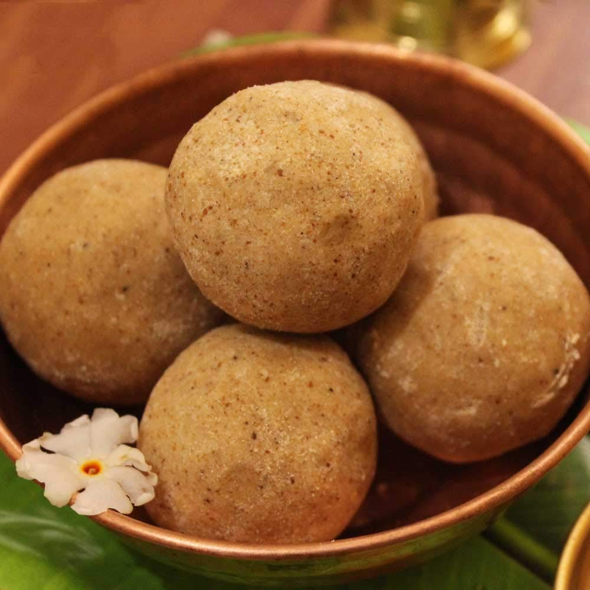

Sunnunda

Description
Sunnundalu are a unique and special sweet from the cuisine of Andhra
Pradesh that is made during Hindu festivals. These are protein rich laddu
made with urad dal, ghee and sweetened with sugar or jaggery. The
Sunnundalu recipe variants may additionally include flavorings like
cardamom powder or some nuts and dry fruits.
How to make
-
Heat a thick bottomed pan or kadai on low flame. Add 1 cup urad dal
(black gram).
- Keep the heat on low or sim and begin to roast the urad dal.
- Stir often, while roasting.
-
Keep on roasting and stirring for even browning and cooking. Roasting
urad dal well is very important. Partially roasted or half-roasted
urad dal can give stomach aches.
-
This is the dal after 12 minutes of roasting. The dal needs to be
golden and become aromatic. Your kitchen will have the aroma of
roasted urad dal.
-
Here is how the urad dal looks after roasting for one more minute.
Keep on stirring without a break once the dal begins to get light
golden.
-
Now, let the dal cool in the pan itself or you can remove the dal in a
plate and let it cool.
-
Once the lentils have become warm or cooled, add them in a grinder
jar. Also, add cardamom seeds from 3 to 4 green cardamom pods.
- Now, take the urad dal flour in a fine sieve.
-
Here is the same mixture after cooling down. It has become dense and
now you can easily shape the mixture into laddu.
- Prepare more laddu with the remaining mixture.
-
You can offer Sunnundalu or Urad Dal Laddu to the deities as naivedyam
or serve to your family. Store the remaining laddu in an air-tight box
or jar and refrigerate.